Geförderte Eigentumswohnung · Privatverkauf
Hallo,
Zuhause.
3-Zimmer-Eigentum in St. Valentin.
Siegfriedstraße 3 · 4300 St. Valentin
- Fläche laut Plan
- 70,10 m²
- Zimmer
- 3
- Balkon zusätzlich
- 6,25 m²
Verkaufsstart1. Mai 2027
Privat & provisionsfrei · Übergabe nach Vereinbarung
Mit Lift.

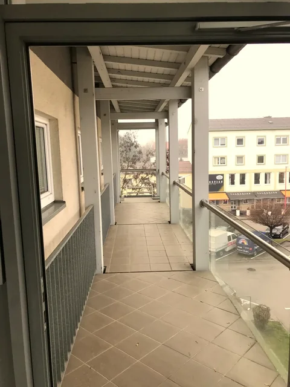
Foto vergrößernSchon das Ankommen hat Charakter
Ein Gang mit Auftritt.
Der Laubengang ist überdacht und absperrbar. Ein besonderer Zugang zur Wohnung – zusätzlich zum eigenen Balkon.
Schon vor der Tür
ein guter Anfang.
Dein Rundgang · Bilder & Plan
Einmal umschauen. Und schon Ideen haben.
14 echte Fotomotive · Dezember 2018
Einrichtung und Zustand von damals.

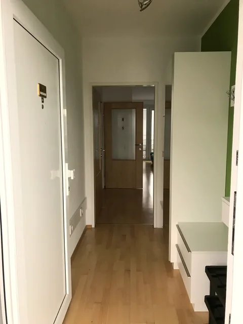
Der Vorraum
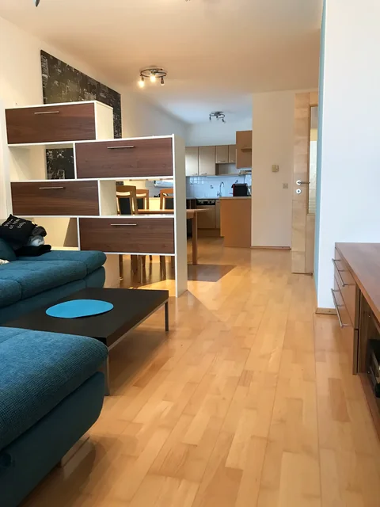
Der Blick Richtung Küche
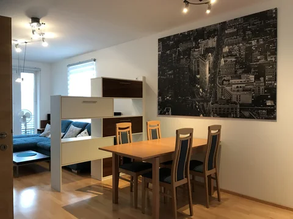
Wohn- & Essbereich
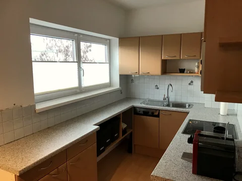
Die Küche
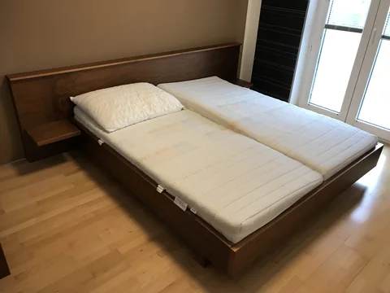
Das Schlafzimmer
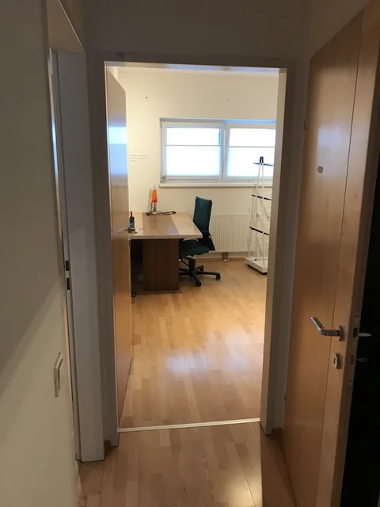
Das zweite Zimmer
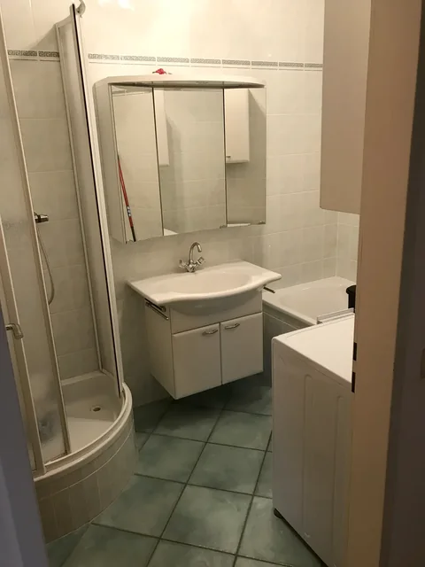
Das Badezimmer
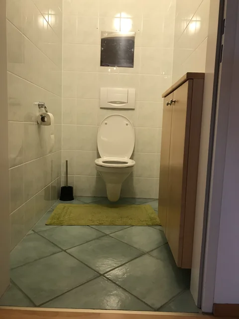
Das separate WC
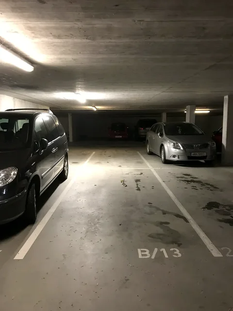
Der Tiefgaragenplatz
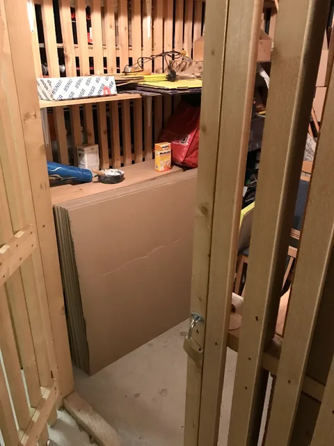
Das Kellerabteil
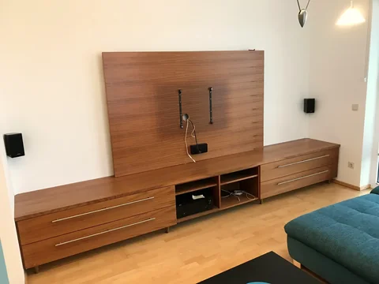
Tischlerarbeit im Wohnzimmer
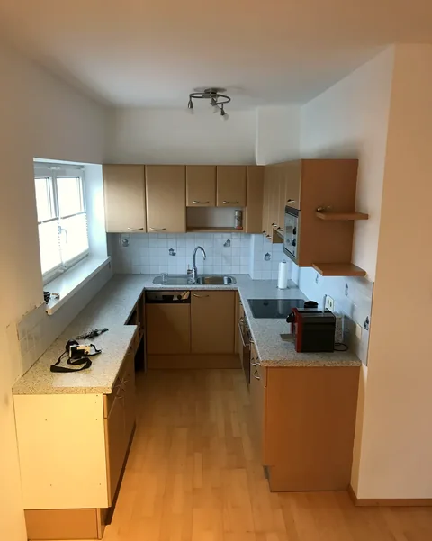
Eine zweite Küchenperspektive
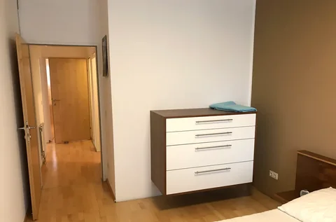
Ein weiterer SchlafzimmerblickAusstattung & ObjektdatenBaujahr 1999 · 3. OG mit Lift
Wohnen, Küche & Bad
Echtholzparkett im Wohnbereich. U-Küche mit Fenster, Granit-Arbeitsplatte, Geschirrspüler und Cerankochfeld. Bad mit Wanne, Eckdusche und Waschmaschinenanschluss im Originalzustand; separates WC. Tischlermöbel optional, Konditionen persönlich.
Angenehm ankommen
Nichtraucherwohnung laut Eigentümerbeschreibung. Das Hauptschlafzimmer ist straßenabgewandt, das zweite Zimmer indirekt straßenabgewandt. Lift bis vor die Wohnung, schwellenarmer Zugang und breite Türen laut Beschreibung. Konkrete Maße und Eignung klären wir vor Ort.
Das Haus denkt mit
Eigener Tiefgaragenplatz, Fahrradabstellplätze in der Tiefgarage und absperrbarer Keller. Post-Empfangsbox im Erdgeschoss. Hunde und Katzen sind laut Hausbeschreibung willkommen; maßgeblich ist die Hausordnung.
Besuch kommt mit?
Laut Objektbeschreibung gibt es kostenlose öffentliche Parkplätze direkt vor dem Haus; Verfügbarkeit und Beschilderung vor Ort beachten. Ein weiterer Tiefgaragenplatz kann gelegentlich hausintern zur Miete verfügbar sein – das lässt sich bei Interesse erfragen, ist aber keine feste Zusage.
Gefördert. Transparent. Persönlich.
Reden wir
über die Details.
Konditionen anfragenKaufpreis, laufende Kosten und eine mögliche Möbelübernahme gebe ich dir im persönlichen Kontakt bekannt.
Die Wohnung ist gefördert. Die Übernahme des bestehenden Landesdarlehens durch den Käufer ist vorgesehen. Das Darlehen endet laut Eigentümer Mitte 2030.
Die Übernahme setzt die Zustimmung des Landes Niederösterreich und die Erfüllung der maßgeblichen Fördervoraussetzungen voraus.
Förderung und Darlehensübernahme im Detail
Die konkreten Förderbedingungen, insbesondere Förderungswürdigkeit und Hauptwohnsitzbindung, werden anhand der Förderungszusicherung geprüft. Die Schuldübernahme ist vertraglich zu regeln; je nach Darlehensmodell ist zusätzlich die Bank einzubeziehen. Das Ende des Darlehens bedeutet nicht automatisch das Ende aller Bindungen. Offizielle Informationen des Landes NÖ.
Die Lage
Nah dran.
Gut gelegen.
Siegfriedstraße 3 · Top 134300 St. ValentinNiederösterreich · Österreich
- Fleischerei & Trafik
- ca. 30 m
- Fitness & Bankomat
- ca. 50 m
- Apotheke, Freibad & Kultur
- ca. 200 m
- Bäckerei & Supermarkt
- ca. 400 m
- Bahnhof, Schulen & Arzt
- ca. 800 m
- A1-Auffahrt
- ca. 3 km
Kurze Wege. Lange Einkaufslisten bleiben optional.
Alle 13 Orte und Entfernungen
- ca. 800 m
- ca. 30 m
- Trafik Hanzca. 30 m
- ca. 50 m
- Raiffeisen · Bankomatca. 50 m
- ca. 200 m
- ca. 200 m
- ca. 200 m
- ca. 400 m
- ca. 400 m
- ca. 800 m
- ca. 800 m
- A1 Westautobahnca. 3 km
Ca.-Angaben aus der Objektbeschreibung; keine neu vermessenen Gehstrecken. Anbieterinformationen öffnen extern.
Direkt vom Eigentümer
Gute Fragen. Gute Gespräche.
Daniel Penzendorfer
Fragen, Unterlagen oder Besichtigung – melde dich bei mir.
Bring deine Fragen mit. Die nehmen keine Wohnfläche weg.
+43 664 190 20 24Daniel.Penzendorfer